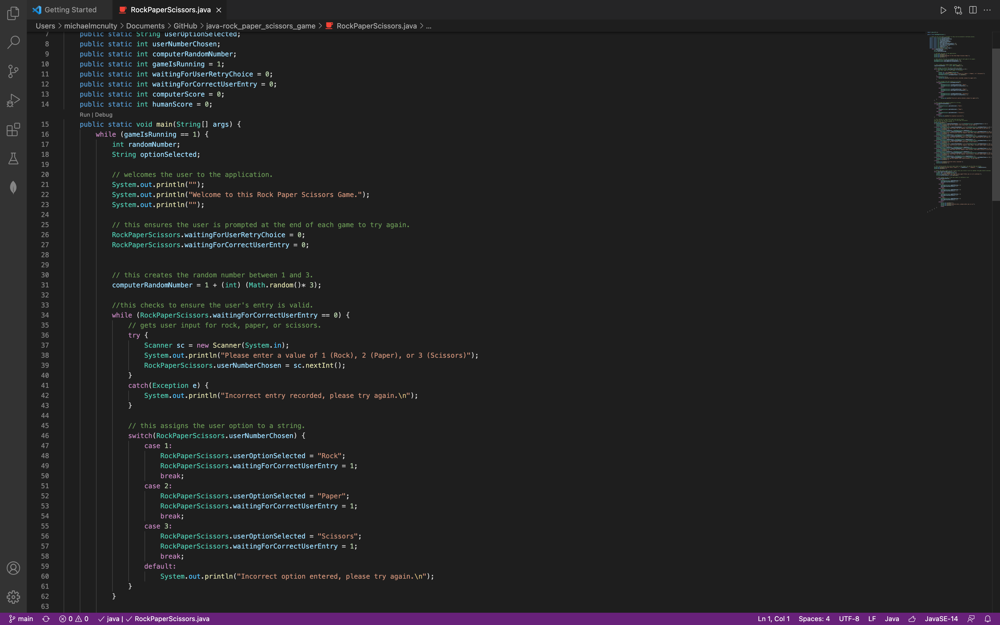
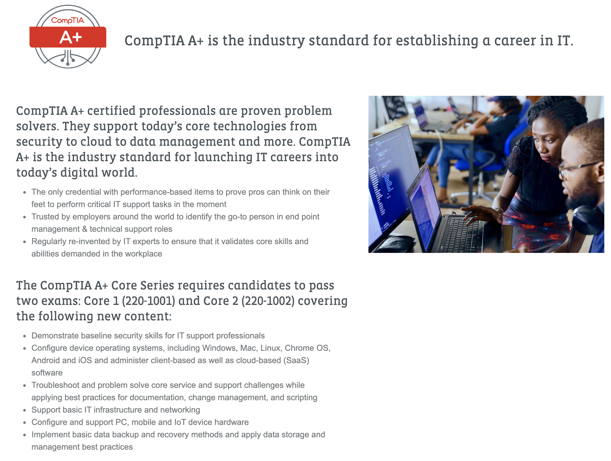

Personal Coding at Home

I spend a lot of time outside of work or school learning about and studying different programming methods, languages, and ideas. I even play some iOS games (7 Billion Humans and Human Resource Machine) where you use programming logic such as if/then or while to help me improve on thinking more logically about solutions to problems.
In addition to that, I also do a lot of logic based training using the Swift Playgrounds app that Apple developed for iPad OS and MacOS. This app has many different lessons you can take, but mainly it focuses on presenting you with a problem or an issue, and then you have to code your way through the problem using the Swift programming language. It's a fun and challenging way to learn a new programming languages, and they have many different types of lessons that vary from very easy to very difficult so there is a lot of variety to choose from.
Finally, in my personal time I also develop my own programs for fun to do different challenges that I set for myself. The above image shows one of the projects I'm currently working on, a Rock Paper Scissors game you can play against the computer. I figured this would be a fun little game that anyone could play on their phone or on anything that can run Java, but it's currently a work in progress. Right now I'm currently working on two different applications, one that converts an entered time into different timezones (this is something I always have issues with and wanted to build an app that could do it for me) and then I'm building an app that allows you to play a card game called Egyptian Raffle against a computer.
Coding at Work
Since I started working in IT I've had a lot of free time at work to work on department-related projects, and one of the first projects that I began when I started in the department was developing a website specifically only for use within our department. This site allows everyone on our team to easily access any weekly updates or change information all in one place, access emergency outage contact numbers, view current sales and promotions for troubleshooting issues, and so much more. I developed the site and over time started thinking about what else I wanted to do to it, and I eventually taught myself the basics of Javascript so I could use tooltips on the site to show someone what items could and couldn't be copied to clipboard. The image above is a royalty-free image I chose to represent the site I built for my department, as the site I built I'm not allowed to show since it contains secure company information and documentation.
After a year or two of creating and maintaining the site, the IT Security team heard about it and asked me to build a website for use with internal phishing campaigns. I used all my previous experience (as well as a lot of new experience from research I did across the internet) to build a site that worked on any platform or browser and that self-adjusted to be perfectly viewable regardless of the size of the device. This site is still in use today, and if anyone in our company happens to fall for one of these fake phishing emails, they will be directed to my site which displays all the information IT Security wants these people to see about what phishing is and why they need to be vigilant.
Certifications

While working in IT, I started looking for ways to earn new promotions at my company, to gain more experience, and prove how valuable I was to the company. For about a year I studied several times a week to prepare for taking the CompTIA A+ certification. This certification proves that you have the equivalent amount of training of one full year working in a hardcore technical troubleshooting field. I took and passed both tests and achieved this certification in 2019, and this - in addition to other projects and work in the department - eventually led to me achieving two promotions where I am now in charge of helpdesk special projects for our entire company.
In addition to being CompTIA A+ certified, I also took and passed my certification for the Cisco CCENT Networking certification. The Cisco CCENT certification is a certification offered by Cisco that proves you have the equivalent training in networking of about 1 year of experience, and it includes training in setting up and troubleshooting routers, switches, VLANs, trunking protocols, EIGRP and other routing protocols, and many other different abilities. When I took and passed this certification, it counted as the first half of the tests needed to accomplish a Cisco CCNA certification, but shortly after I passed it the Cisco CCENT certification was retired and now Cisco only offers the CCNA certification, which at this time I am not looking at pursuing.